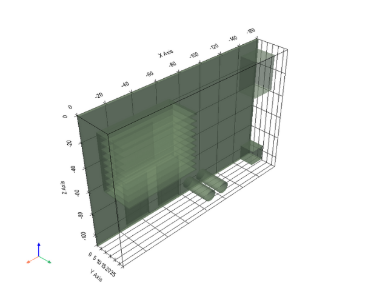
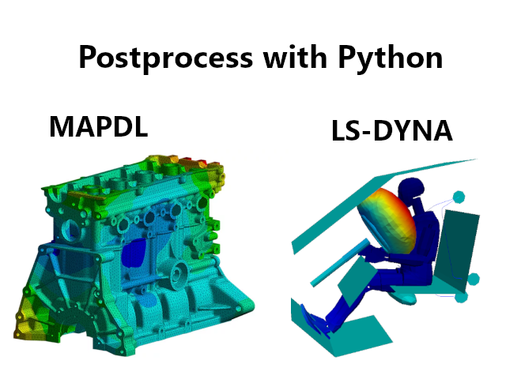
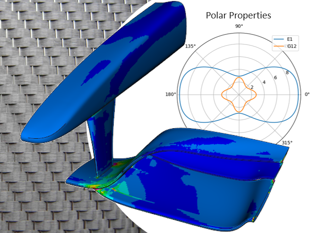

Examples# Examples for the different pyansys packages can be found in their specific documentation. PyAnsys packages examples#  PyAEDT PyAnsys Math PyDPF - Core  PyDPF - Post  PyDPF - Composites PyDynamicReporting PyEnSight PyFluent PyFluent - Parametric PyFluent - Visualization PyMAPDL PyMAPDL Reader PyMechanical PyMotorCAD PyOptislang PyPIM PyPrimeMesh PySeascape PySherlock PySystemCoupling PyTwin Granta MI BoM Analytics Granta MI RecordLists Shared Components - OpenAPI Common